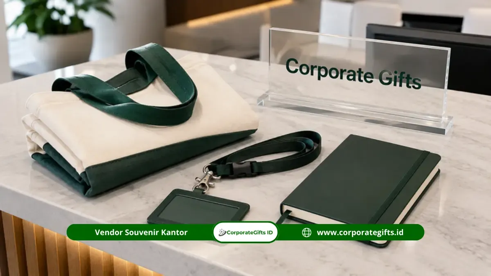

Corporate Gifts ID - Hampers corporate gift adalah paket suvenir fungsional yang disiapkan instansi untuk mendukung acara B2B, seperti rapat tahunan, pelatihan karyawan, atau gathering perusahaan. Paket ini umumnya berisi kombinasi barang bernilai guna tinggi seperti tote bag kanvas, lanyard ID card, dan perlengkapan tulis, bukan sekadar kemasan seremonial yang cepat dilupakan, sehingga memberikan konsistensi optimal dari sisi mutu, jumlah, dan tampilan visual.
Bagi instansi pemerintah, BUMN, dan perusahaan swasta di Bengkulu, kebutuhan pengadaan hampers corporate gift kerap kali muncul menjelang agenda resmi. Pemilihan komponen cinderamata yang tepat membantu menjaga citra profesionalitas institusi meskipun proses persiapan berlangsung dalam waktu terbatas.
Poin Kunci Hampers Corporate Gift B2B:
- Fungsionalitas Nyata: Mengutamakan kombinasi barang kerja harian seperti tote bag, lanyard, blocknote, dan pen set berlogo.
- Akurasi Registrasi: Tote bag canvas dan lanyard mempermudah alur penerimaan tamu sekaligus penanda identitas resmi acara.
- Kesesuaian Skala Acara: Spesifikasi dan isi hampers disesuaikan dengan profil peserta rapat koordinasi, training, atau seminar.
- Efisiensi Anggaran: Pengadaan langsung dari vendor B2B resmi menghindarkan pengeluaran berlebih pada kemasan non-fungsional.
- Jangkauan Logistik Bengkulu: Standar pengemasan rapi dan ekspedisi terpercaya memastikan barang tiba aman di lokasi acara.
Memaksimalkan Kesuksesan Acara Melalui Corporate Gift Tepat Guna
Keberhasilan sebuah agenda kerja korporat atau instansi tidak hanya dinilai dari lancarnya susunan acara di panggung, melainkan juga dari impresi yang dibawa pulang oleh para peserta dan tamu undangan.
Corporate gift yang tepat guna membantu memperkuat ingatan positif tersebut karena barang yang dibagikan benar-benar terpakai dalam rutinitas kerja harian di kantor, bukan sekadar disimpan sebagai pajangan. Selain itu, pemilihan hampers fungsional membantu panitia mengelola anggaran acara dengan lebih efisien, menghindari pengadaan barang yang mubazir.

Koleksi gift set hampers kantor eksklusif dengan kustomisasi logo presisi untuk instansi di wilayah Bengkulu.
Komponen Esensial dalam Corporate Gift Hampers Instansi
Sebuah paket hampers untuk kebutuhan acara B2B umumnya terdiri dari beberapa komponen inti yang saling melengkapi kebutuhan mobilitas serta produktivitas kerja:
1. Tote Bag Canvas dan Lanyard ID Card Karyawan
Tote bag kanvas premium menjadi wadah dasar yang sangat digemari karena kekuatannya menampung dokumen rapat, laptop, dan perlengkapan pribadi peserta. Material kanvas yang tebal menjamin durabilitas produk hingga bertahun-tahun pasca acara.
Sementara itu, lanyard ID card printing dengan logo resmi instansi melengkapi kebutuhan identifikasi tamu selama forum berlangsung. Pembagian tote bag dan lanyard pada meja pendaftaran (registration desk) secara efektif mempercepat alur registrasi peserta seminar atau raker.
2. Block Note dan Perlengkapan Tulis Profesional
Buku catatan agenda dan pulpen metal eksklusif adalah pasangan wajib untuk sesi diskusi panel, pelatihan teknis, maupun presentasi kerja.
Untuk kegiatan yang berlangsung lebih dari satu hari (multi-day workshop), pemilihan blocknote hardcover dengan jumlah halaman lebih tebal sangat disarankan agar peserta memiliki ruang catatan yang memadai tanpa perlu membeli alat tulis tambahan dari luar.
Tabel Matriks Komponen Hampers dan Alur Penggunaan Acara
Berikut rangkuman pembagian peran setiap komponen hampers dalam mendukung operasional acara:
| Komponen | Fungsi Utama dalam Acara | Waktu Pembagian | Nilai Manfaat Jangka Panjang |
|---|---|---|---|
| Tote Bag Canvas | Membawa dokumen materi dan perlengkapan pribadi | Saat registrasi peserta | Tas belanja ramah lingkungan / tas kerja harian |
| Lanyard ID Card | Identifikasi tanda peserta resmi selama forum | Saat registrasi peserta | Tali kartu akses kantor / ID card pegawai |
| Block Note Spiral / Kulit | Mencatat poin penting diskusi dan materi pelatihan | Sepanjang acara berlangsung | Buku agenda rapat dan pencatatan to-do list harian |
| Alat Tulis (Pen Metal) | Melengkapi kebutuhan mencatat dan tanda tangan | Sepanjang acara berlangsung | Pena kerja profesional berlogo grafir laser |
Dukungan Penuh Corporate Gifts untuk Agenda B2B Anda di Bengkulu
Setiap instansi dan korporasi di Bengkulu memiliki karakteristik acara yang berbeda, mulai dari rapat dinas koordinasi daerah, sosialisasi program perbankan, hingga gathering perusahaan swasta.
Sebagai penyedia layanan pengadaan souvenir kantor resmi, CorporateGifts.ID memberikan keleluasaan penuh dalam pemilihan material, kombinasi item, hingga teknik branding logo (sablon, deboss, atau grafir laser) sehingga paket cinderamata yang dihasilkan benar-benar merefleksikan identitas visual instansi Anda secara akurat.
Temukan Paket Event Sesuai Kebutuhan di Katalog Kami
Panitia pengadaan acara di Bengkulu dapat mengeksplorasi ragam pilihan paket seminar kit dan hampers melalui katalog digital kami. Setiap paket dapat disesuaikan dengan kuantitas pesanan dan pagu anggaran instansi Anda.
Melakukan pemesanan sejak jauh hari sebelum tanggal kegiatan memberikan waktu yang cukup bagi proses quality control (QC) menyeluruh dan pengiriman ekspedisi yang tepat waktu ke alamat kantor Anda di Bengkulu.
Kesimpulan dan Konsultasi Pengadaan
Menyiapkan hampers corporate gift yang tepat guna di Bengkulu adalah langkah strategis untuk memperkuat relasi kemitraan, meningkatkan kepuasan peserta, serta menjaga wibawa instansi penyelenggara acara.
Konsultasikan kebutuhan hampers B2B Anda bersama tim spesialis CorporateGifts.ID. Dapatkan penawaran harga resmi dan visual mockup gratis melalui formulir permintaan penawaran harga hari ini juga.